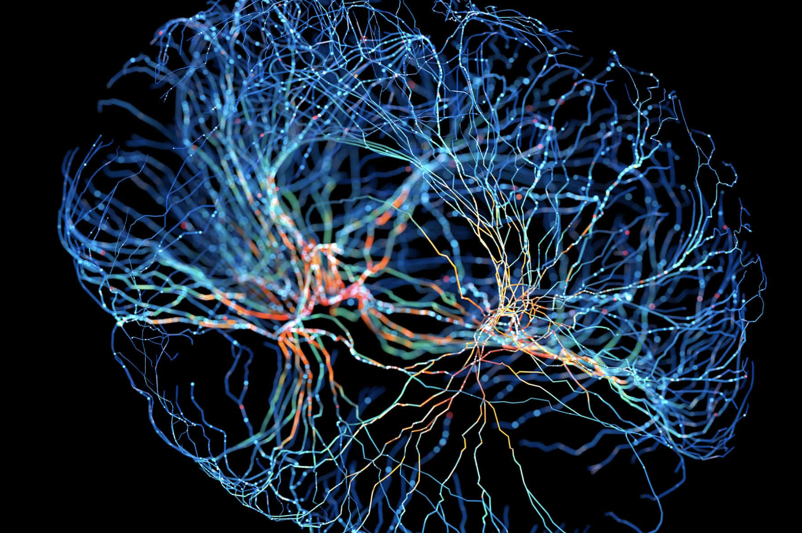
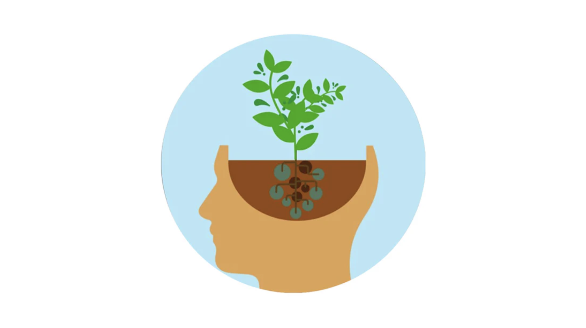

Sprint 4 Human Skills - Neuroplasticity and Growth Mindset
14 April, 2025
For my first Human Skills blog post, I'll be posting my notes from my exploration into neuroplasticity and growth mindsets.
1. Research Neuroplasticity
Discuss how understanding the principles of neuroplasticity benefits people.
Research into neuroplasticity shows us that our brains are adapting and rewiring themselves every day to optemise for new learning/skills/habits. Neuroplasticity has far reaching implications that impact all aspects of our lives. For the most part, this is a good thing. It allows us to improve ourselves (through learning, developing good habits, changing our ways of thinking, etc), but it's also responsible for the bad habits and behaviours we may have, such as addiction. By understanding the science of neuroplasticity, people can make sure that their behaviors align with their goals to rewire their brains in the desired way that will change them for the better.
Research has also shown that teaching neuroplasticity to students and workers improves learning and performance. Many people are still stuck in the old scientific belief that our adult brains are in a fixed state. By understanding that this is not true, students and workers will have a better understanding of how they can train their brains to learn new things. This works better than simply telling someone "You can do it!", because it gives them the real science that will help them to understand what they need to do to reach their goals. Science is far more believable than just being told it's possible, and creates real motivation based on actual understanding.
Discuss how you might engage with the principles of neuroplacticity for your benefit.
In the student handbook's content, I was taught the A.G.E.S. learning model:
- Attention - To learn effectively, you need to be able to properly focus on something. This means minimising distractions and giving yourself the nessicary time to "sink in" to the learning. The more focused you are on your learning, the more you will remember it.
- Generation - Generate meaningful connections. What does this mean? To generate meaningful connections, you have to put new concepts and ideas in context of what you already know. Rather than focusing on memorization, focus on context and understanding. With those, the memorization will come naturally. As mentioned earlier, when we learn new things, we form new neural pathways. By repeating mental processes, we strengthen those pathways. Rather than creating an entirely new pathway from scratch, a more efficient approach is to make connections between new learning and what you already know. This allows you to build of of existing pathways that are already strong.
- Emotion - The way you feel about things greatly influences how they interact with them. You also tend to have the strongest, most vivid memories of experiences with deep emotions. By attaching emotions to your learning, you can increase your memory of it, as well as your motivation towards learning. This could be rewards for completing assignments, or looking forward to the benifits that a course of study will give you.
- Spacing - The most effective learning is done in "chunks". This means spacing learning out and giving yourself time to absorb the nessicary knowledge. Learning too much in one big block can cause burnout and you will likely forget some of it. Rather than overwhelming yourself with too much new knowledge, focus on repetition and practice, not memorization. Letting information process through time (spacing), repitition and practice is the most effective way to move information from the short to long-term memory.
With this knowledge, I'll engage with the principles of neuroplasticity in a few ways.
- Firstly, with each new concept I learn in DevAcademy, and with each new sprint, I put the new concepts in context of the old ones. For example, I might think to myself "Okay, I see how Concept B relates to Concept A from last week", or "Concept A and Concept B make more sense now, because I can see how Concept C links them together.
- Deep focus - I've been coming in to campus often during foundations. Not because I can't study at home, but because arriving at a dedicated location puts my brain in "study mode", and there are no other distractions to get in the way of my learning. At home, if I want to take a break I may find myself wasting time, e.g. sitting on my bed on social media, but on campus it's a much more planned, dedicated study session, so the breaks are still focused.
- Emotion and goals - I've just finished high school, and previously during this time I was working a fast food job at KFC. It was really boring. I quit that job to study at DevAcademy, so I'm already really enjoying it more than before, and the contrast is very obvious. This means that my day-to-day life has gone from boring while at KFC to exciting while at DevAcademy, so I already have positive emotional associations with the learning process that I've gotten into. Secondly, I've set goals for the latter half of 2025 to look forward to. I'm hoping to have a better job than before, and with higher pay than fast food, I'll move into a new, nicer place. I've been keeping these goals in mind as positive reinforcement throughout all of my study.
- Spacing - To avoid burnout, I've been working hard to finish all of my work before sunday, so that I have a day off when I can "do nothing". Even when not actively studying, the knowledge from the week is still processing/sinking in, which means I'll be ready to start the next sprint on Monday, and having the day to relax also helps me to avoid burnout.
What are some of the ways to increase your neuroplasticity?
Previously, many scientists believed that the human brain developed only during childhood and afterwards was fixed. Recently, better research and understanding has proven that this is completely false. Our brain is made of approximately 100,000,000,000 neurons and each of these neurons form countless connections between eachother. Different mental processes create signals in different neurons, which travel through the connections (known as neural pathways), allowing us to remember things, feel emotion, think specific thoughts, and perform specific tasks. The more we repeat something, the more often this neural pathway is stimulated, and the stronger it becomes. Imagine a pathway like a road, the more "traffic" is on that road, the more lanes are needed and the stronger that road becomes. As the road (neural pathway) becomes stronger, tasks and thought processes become easier to repeat until they eventually become second nature. It's no different from a muscle that we need to excersise. The process of forming new roads and removing old ones is called "neuroplasticity". When we learn new things, our brains literally rewire themselves to optemise for the new knowledge/skill/habit we have developed. It's not innacurate to say that (if "we" are our minds), we can transform ourselves into entirely new people based on our habits and behavior.
The A.G.E.S. learning model is a great way to increase neuroplasticity. By optemising these four variables (as listed previously), we can improve our mind's neuroplasticity, our ability to learn. When researching this, the thing that stood out the most to me was the "G", for Generation. This is about "generating meaningful connections" with knowledge/skills/habits we already have. Previously I talked about thinking of neural pathways as roads that become highways when traffic increases. By putting new learning in context with previous understanding, we don't have to build new roads from scratch. We can use an existing highway and simply add on-ramps and off-ramps.
The more we engage with activities that challenge both our brain and body, the more neural pathways we will form. Engaging in mentally stimulating activities not only helps you form pathways directly related to new learning, but it helps you to form pathways that make the learning and thinking process a habit.
Finally, I'd say a big one is maintaining your physical health too. Your body and mind are interlinked, as are your physical and mental energy levels. This means getting good sleep, staying hydrated, and eating well to give both your body and mind the best ability to focus and learn.
Link to a resource that you found particularly usefull or engaging.
https://pmc.ncbi.nlm.nih.gov/articles/PMC3181990/
I only skimmed this, but I found it very interesting, as it goes into some actual neuron science which gives useful understanding into neuroplasticity.
2. Research Growth Mindset
Discuss what it is and why it is relevant.
One of the key ideas of the growth mindset is not being stuck in the present. Rather than thinking "I can't do this", It's about not being able to do it "yet". "You" aren't just the present version of yourself, you're always changing and if you continue to practice and learn, you will eventually be able to achieve those goals. Having a growth mindset is closely linked to an understanding of neuroplasticity. Firstly, studies show that when students and workers are taught about the actual science of neuroplasticity, their mindsets tend to shift towards a growth mindset. A growth mindset is not just about pure motivation, which often changes day-to-day, it's about understanding that consistent effort will result in change, and your current state does not represent you as a person completely. It's about taking pride in the improvement process, not just your current state. In the end, someone who is "successful" but fixed in their current state will always be surpassed by someone who is constantly improving.
Individuals with a growth mindset are less averse to challenge, difficulty and failure. They understand that confusion and failure are not signs of "being dumb", but signs that they are in the learning process, and taking real action towards improvement. This is the real way learning is done. Because these people are challenging themselves more than those with a fixed mindset, they create and strengthen new neural pathways more effectively, and they are the ones who fully benifit from neuroplasticity.
In this exploration, did anything surprise you? Change for you?
When researching, I found that it's possible to have a growth mindset in some areas, but a fixed mindset in others. It made me think about which aspects of my own mindset are growth and fixed, which is definately something I should do some reflecting on.
I also found it interesting that some studies say praising intelligence creates a fixed mindset. Some studies have shown that praising traits like intelligence create a mindset that you can either be "smart" or "not smart" from a young age. To improve this, it's better to praise effort in learning.
How will you integrate growth mindset into your learning journey?
I was frequently taught about having a growth mindset in primary school, but it always felt a little fake to me, because we were simply told to add the word "yet" to everything, e.g. "I can't do it... yet", but not taught any of the actual reasons why we were doing it. And then the schools praise/critizism was tied to a student's current abilities rather than their engagement with the learning process. I now have a better understanding of what the real point of a growth mindset is, which I wasn't taught in school as a kid.
I'm somewhat confused about many of the concepts that I'm being taught in DevAcademy but I'm not panicking about that, because I know it's part of the learning process. Already, there are many things I can confidently do now that I couldn't understand just a few weeks ago in earlier sprints. Every mistake I've made when writing code is sometihng that I've learnt from and am less likely to repeat.
I'll set learning progress goals, not just achievement goals. This could mean I have a goal to "Understand X" or "Be able to explain how Y works", rather than a goal to "Be a successful programmer" and "Make X dollars".
I'll do my best to understand that mistakes are the best way of learning, and every time I make a mistake my skill increases.
Link to a resource that you found particularly useful or engaging.
This is a good summary of the difference between a growth and fixed mindset.
3. Blend with your learning plan and strategies.
Reflect and discuss how these understandings may shape or influence your learning plan and strategy.
This understanding of neuroplasticity and a growth mindset will influence my learning plan in a few ways:
- Firstly, I'll make sure to at all times be aware that confusion and hard effort are a good thing. If something is easy, I'm probably not challenging myself enough.
- In previous weeks I haven't had a lot of time for stretch material, but last week I had a little time to spare, so I started on some of the stretch challenges for the JavaScript Cafe. I worked through what I could, but once I got to challenges where I felt like I had no clue how to do them, I moved on. This week I may or may not have a lot of time for stretch material, but If I do, I'm going to allow myself to exist in a state of total confusion. Even if I have absolutely no idea what to do, I can still sit for some time and think about he problem. If I don't find the perfect solution, it's still gotten me to think, which is a success in an of itself.
- At the end of each sprint, when filling out the end-of-sprint-x.md reflection, I'll think about what progress (big or small) I've made that week, e.g. a topic or skill I didn't know about or understand, that I now do, or even just something complicated becoming slightly easier. I think reflection and recognising successes in the learning process in this way are an important part of staying motivated.